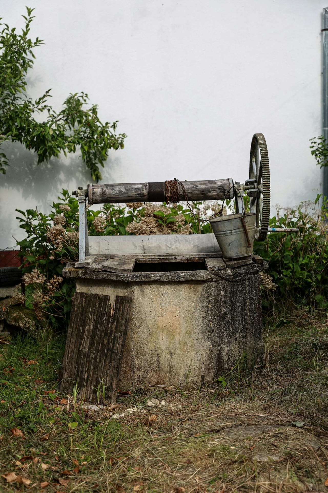
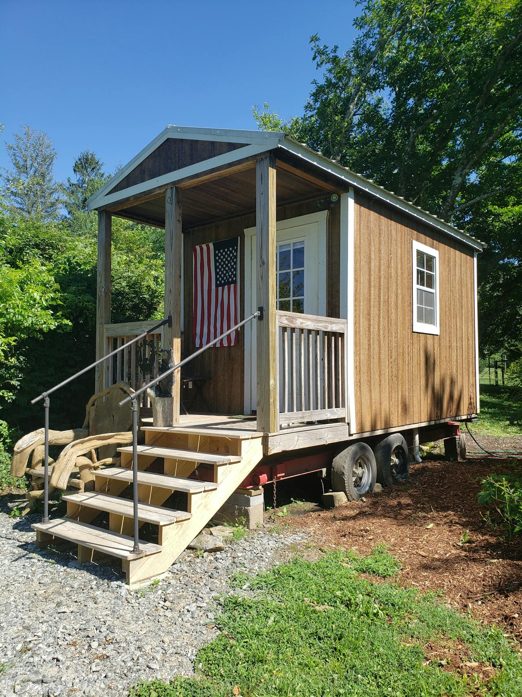

Practical advice on buying, selling, and owning real estate in Oregon. Written by Larissa Mayfield.


A well flow test tells you how much water a property can reliably deliver. Here is what to expect, what the numbers mean, and when to walk away.
Oregon’s Bond program and FHA loans both serve first-time buyers, but the differences matter. Down payment, PMI, income limits — here is how they compare.
Pricing rural land is not like pricing a subdivision home. Comps are sparse, improvements vary wildly, and the buyer pool is different. Here is how it works.
What is happening in the Veneta and west Lane County real estate market right now? Inventory, pricing, and what buyers and sellers should expect.
Buying a property with a septic system? Here is what you need to know about inspections, permits, and what can go wrong.

A pre-approval letter is your ticket to writing competitive offers. But not all pre-approvals are created equal. Here is what matters.
An easement gives someone else a right to use part of your property. Here is how to read them, what they mean, and when to worry.
Oregon’s water law is different from most states. If the property has irrigation, a pond, or diverts from a stream, water rights matter.
USDA Rural Development loans offer zero down payment for qualifying properties. Many Lane County homes are eligible — here is how it works.
Beyond the down payment, buyers in Oregon face closing costs that typically run 2% to 4% of the purchase price. Here is the breakdown.
Rural properties have financing quirks that standard loans do not cover. From USDA to portfolio lenders, here are your options.
After hundreds of transactions, these are the mistakes first-time buyers make most often. All of them are preventable.
The 2026 market rewards preparation. Here is the playbook I use with every seller to maximize price and minimize time on market.
A higher credit score means a lower interest rate, which means lower monthly payments. Here is how to improve your score before you apply.
A home inspection is your best protection against expensive surprises. Here is what inspectors look for and what you should ask about.

Professional staging can increase your sale price by 5% to 10%. But you do not always need a professional — here is what works on any budget.
Oregon is attracting California transplants at record rates. Here is what to expect about housing, taxes, climate, and culture.
Oregon’s property tax system is unique. Measure 50, assessed value caps, and compression — here is what homeowners need to know.
Aerial photography shows buyers what a property truly offers. For acreage and rural listings, drone photos are not optional — they are essential.

Oregon’s ADU-friendly laws make multigenerational living more accessible than ever. Here is what buyers need to know.